Allen's own copy of the 3rd Bomb Group unit history book
One of the family's own favourites: sidearm drawn, field kit laid out beside him. The same frame appears later in this document captioned as a Saturday inspection at Indiantown Gap, Pennsylvania, 1937 — and the pre-war dress makes the Pennsylvania reading the likelier of the two.
The Unit History Book
Allen kept his own copy of the 3rd Bomb Group's unit history book, The Reaper's Harvest — its cover carries the same blue oval emblem that runs through these pages, and gold-embossed B-25 silhouettes in the corners.
Allen's own copy of “The Reaper's Harvest,” the 3rd Bomb Group's unit history.
The 90th Squadron
The 90th Squadron insignia, as printed in the unit history.
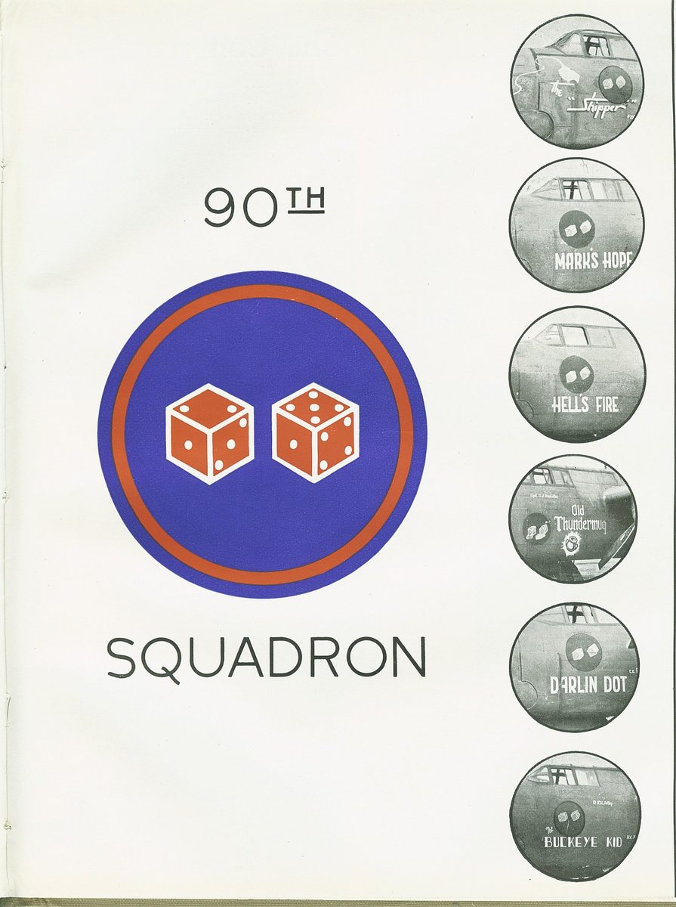
The squadron insignia alongside named B-25 noses: The Skipper, Mark's Hope, Hell's Fire, Old Thundermug, Darlin Dot, The Buckeye Kid.
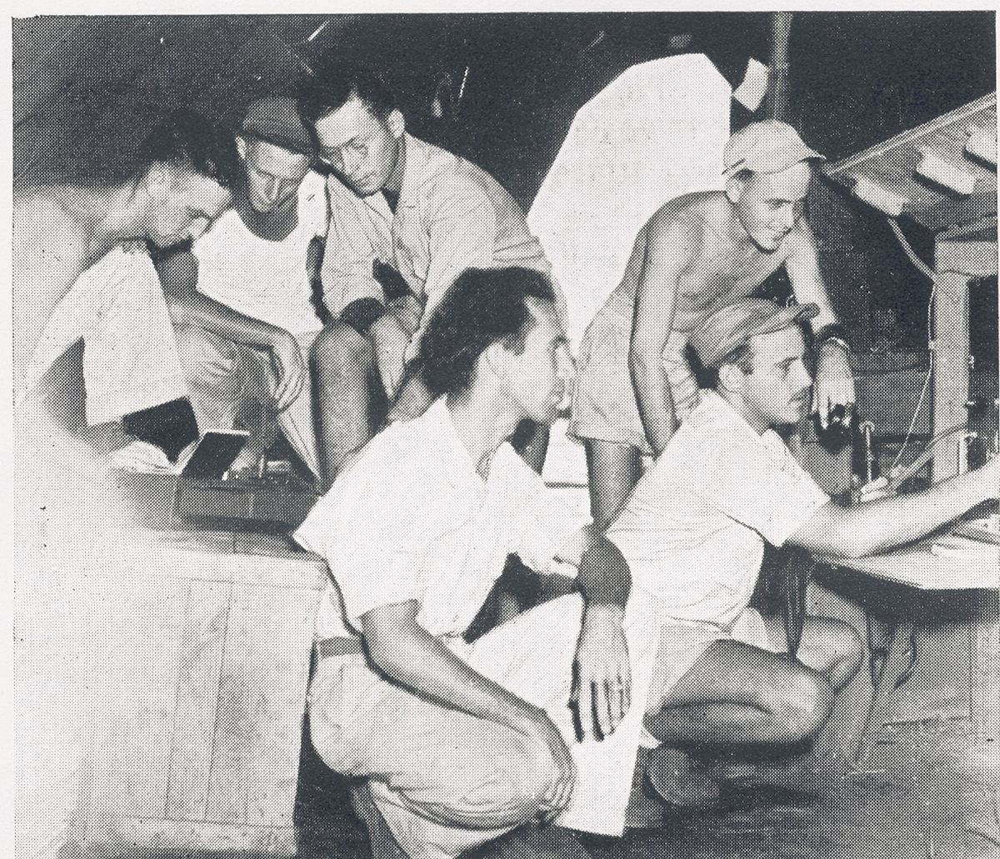
Another page from the same unit history book — that's Allen himself, turning the dials on the squadron's radio equipment. His own trade: Communication Chief.
The 90th Squadron's Own “The Commanders” Page
Another page from the 90th Squadron's own chapter of The Reaper's Harvest, naming the squadron's commanding officers “past and present” as of the book's printing: Maj. Stanley D. Kline (commanding), Maj. C. D. Prokopovitz (ex-commander), Capt. W. T. Robinson (executive officer), and Maj. K. E. Rosebush (ex-commander). Not one of those four names appears among the nine commanding officers Allen wrote out by surname in his own service record book (Wilson, Hubbard, Dickerson, Peterson, Ellis, Lasner, Hendry, Kretzsch, Priboroski). The likeliest reason is a plain one: the book records who held squadron command near the end of the war, while Allen's list runs back through the men he served under earlier in his tour.
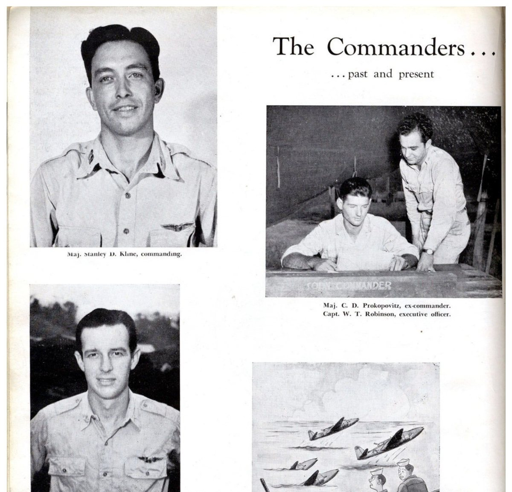
“The Commanders … past and present,” from the 90th Squadron's own pages in The Reaper's Harvest.
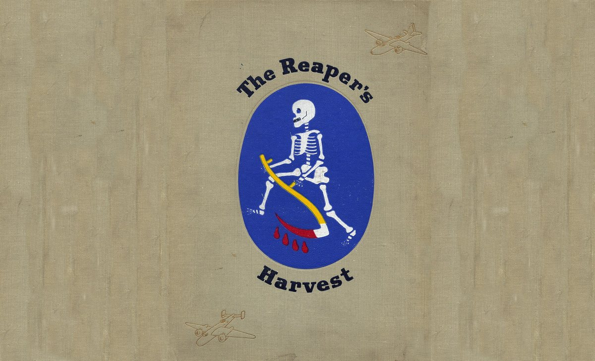
The tan linen cover of a unit history book, bearing a blue oval with a white skeleton striding behind a scythe whose red blade drips three drops of blood, lettered in an arch “The Reaper’s” above and “Harvest” below; two twin-engine bombers are embossed faintly in the cloth at opposite corners.
Timeline, 1936–1946
The service years in full: eighty entries between the mathematics prize at Cressona High in June 1936 and his graduation from Coyne in Chicago in January 1946.How to read this, and what the marks mean
A filled diamond is a date from a document — a service book, a discharge paper, a state form.
A blue diamond is a date from a newspaper printed at the time.
A brass diamond is a date from his own letter home, written in Australia in May 1942. There are only a handful, and they are the best dates in the document.
A hollow diamond, with the entry in italic, is Allen himself, remembering in 2006. The italic is there so the distinction survives a photocopier.
A dashed outline is family memory.
A diamond is a day. A bar is a stretch of time — a month, a season, a year, or a run of years — drawn to the length the evidence actually covers, so “spring 1942” is not pretending to be the fifteenth of April.
The rail at the left runs to scale and the rows do not. Where the brackets fan out, his life was crowded; where they run straight across, it was not.
The brass bar with a label beside it is a scale stick: it shows how much time one length of rail is worth on that panel, which differs from panel to panel.
Four panels, each to its own scale. The second covers fourteen months and the first covers five years, which is why the scale sticks differ.
Where a rank is attested the brass line at the left steps across: private, corporal, sergeant, staff sergeant, master sergeant. It is drawn only where a grade is actually recorded, never between.
Where He Served
Queensland, 1942: Brisbane and Camp Ascot, north by train to Townsville and west to Charters Towers, and the flight to Rockhampton.This drawing, set out in words
Brisbane, where he landed on 25 February 1942, and Camp Ascot, the racecourse the group was quartered in.
Townsville on the coast, about 9 March 1942, then west on the Great Northern.
Charters Towers, the group's station from 10 March 1942.
Rockhampton, reached by air in the southern spring of 1942 — probably — twenty-one men in a Mitchell, and the ambulance whose number matched the one Donald Berger drove.
Mount Bartle Frere, where his squadron lost a crew on 21 April 1942. He was not aboard.
A filled disc marks a place he is documented to have been. An open square marks a place documented for his unit rather than for him. An open square with a diagonal tick marks his own squadron. A dashed circle marks a place that is inferred rather than recorded.
A brass ring crossed by a bar marks a place he never stood on — a target, or somewhere his group went without him. Each carries the words HE WAS NOT THERE.
A solid line is a journey whose means of travel is recorded. A dashed line is a move that is documented while the means is not. A dotted line rests on his own account alone.
No plate carries a computed distance. The document already holds his own “about 12,000 miles” against a measured 9,500 to 10,200, and a third quietly calculated figure would be the fault this rebuild exists to remove.
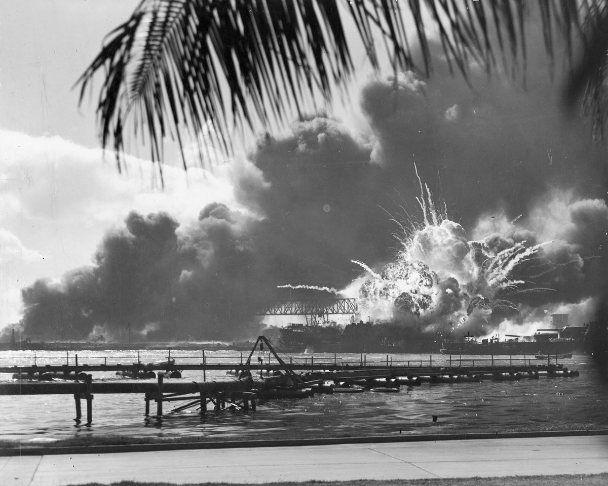
A harbour under attack, photographed from the shore beneath a palm frond: a white fireball and streaks of burning debris burst from a warship inside a floating drydock, heavy black smoke rolling across the water behind a pipeline trestle. Identified in the U.S. Navy record (National Archives 80-G-16871) as the destroyer USS Shaw in floating drydock YFD-2, Pearl Harbor, 7 December 1941.
The 90th Squadron in the Field
Named aircraft of the 90th Bomb Squadron, from Allen's own wartime photo collection.
“Hell's Fire,” shark-mouth nose art and mission markings.
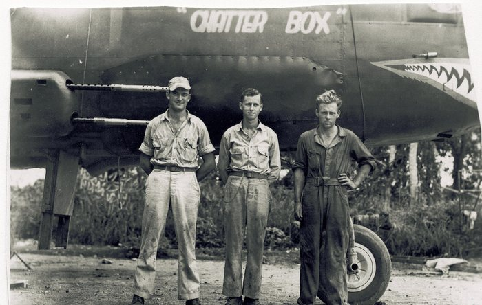
Three crewmen beneath “Chatter Box.”
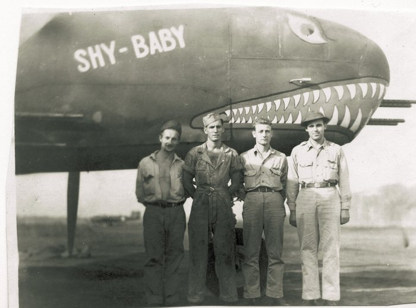
Four crewmen beneath “Shy-Baby.”
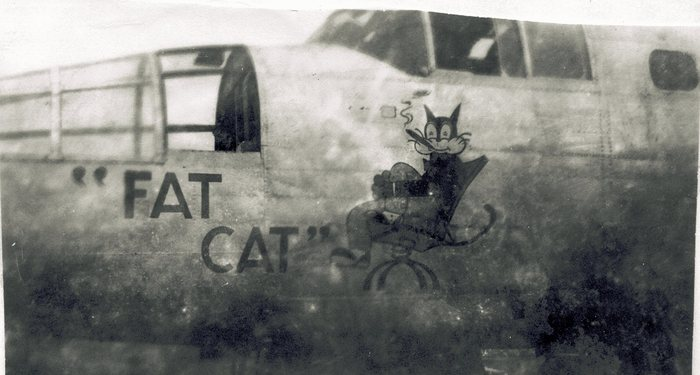
“Fat Cat” — a cartoon cat smoking a cigar.
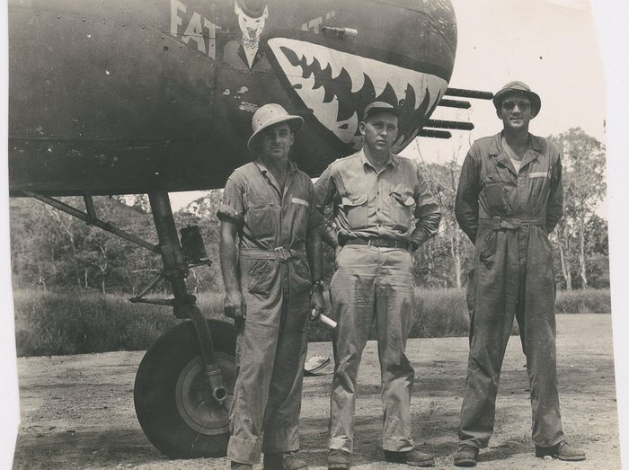
Three crewmen in front of “Fat Cat,” shark-mouth and bow tie visible.
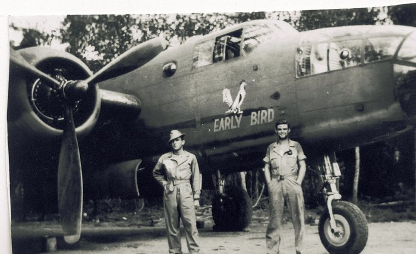
“Early Bird,” rooster nose art, two crewmen in front.
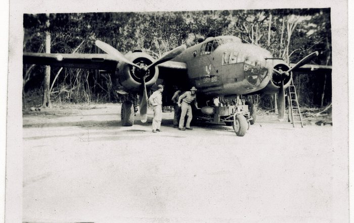
Ground crew load bombs beneath “Early Bird.”
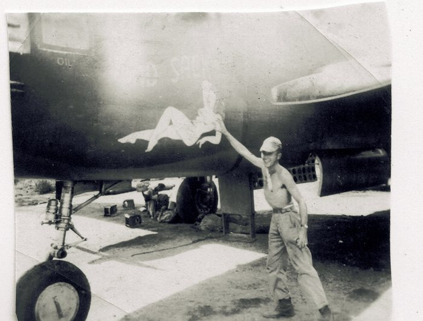
“Sad Sack” nose art, a bomb-loading cart beneath the fuselage.
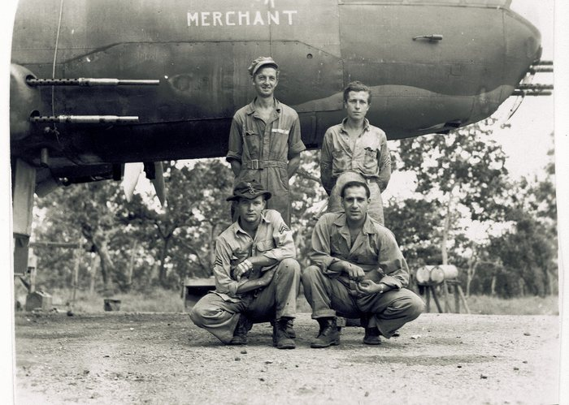
Four crewmen in front of “Merchant.”
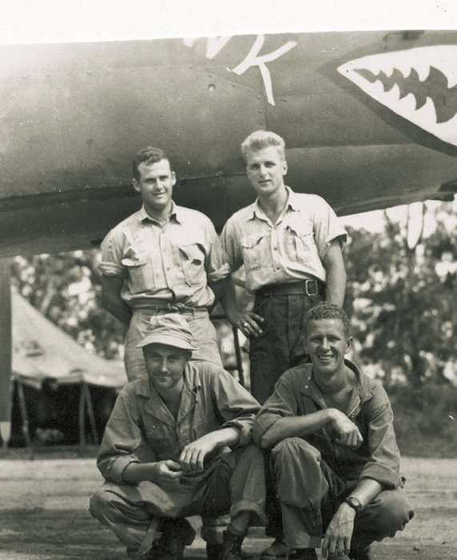
Two crewmen crouch in front of another shark-mouthed B-25 nose.
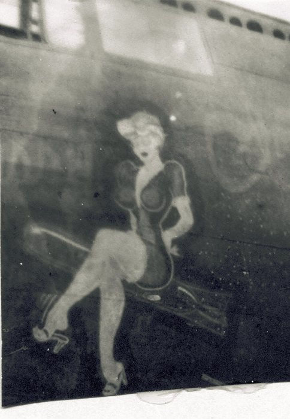
Pin-up nose art — a woman seated on a bomb, painted on the fuselage.
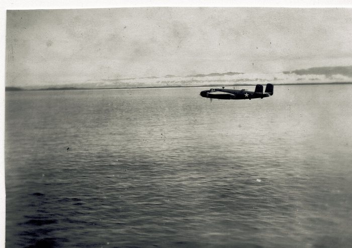
11290[2] -- the tail number for serial 41-1290[2], a B-25C from the same production block as Spook II, 41-12969. The national insignia is a plain white star in a disc with no side bars, which dates the frame before the end of June 1943, when the bars were added." loading="lazy" width="700" height="493" decoding="async">
A B-25 Mitchell low over open water, photographed from another aircraft. The fin carries 11290[2] — the tail number for serial 41-1290[2], a B-25C from the same production block as Spook II, 41-12969. The national insignia is a plain white star in a disc with no side bars, which dates the frame before the end of June 1943, when the bars were added.
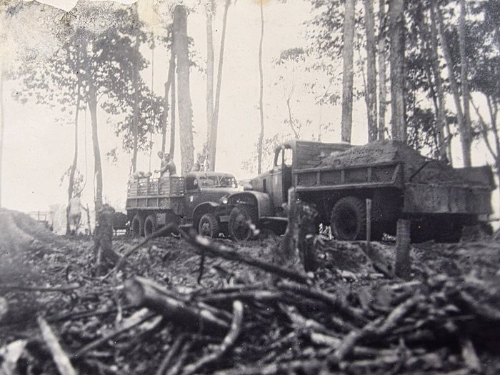
Trucks drawn up in a freshly cleared patch of tall timber, the ground torn to mud and littered with cut branches and logs. Two shirtless men work in the bed of a tandem-axle cargo truck, one paying a rope over the side rail beside a row of sacks; to the right a dump body stands heaped with earth or broken rock. Nothing in the frame fixes the place.
The Planes He Photographed
Serial numbers and fates for the named B-25s in Allen's own collection, checked against the 3rd Bomb Group's surviving loss records and against its own official unit history, The Reaper's Harvest — the same book Allen kept, digitized in full by the 3rd Attack Group Association.
Spook II, 41-12969, was Larner's own aircraft. Leading his squadron into the attack at the Battle of the Bismarck Sea, March 3, 1943, he radioed his wingmen off his tail — “Get off my wing, you guys, get your own damn ships! This one's mine!” — and bore down alone on the largest ship in the convoy, a Teratsuki-class destroyer. The 3rd Bomb Group's strafers helped sink or damage every vessel in an 18-ship convoy that day, the action that proved low-level strafing tactics could work. Spook II — also logged as Onkle Rafe — stayed Larner's aircraft until she crashed on April 30, 1943.
Fat Cat, 41-12449, was flown by 1st Lt. William R. “Red” Johnson. Feather Merchant (also called Irene), 41-12442 — likely the “Merchant” in Allen's own photo — survived the war and was later put on display at Aitape High School. Chatter Box is harder to pin down: one detailed account gives 41-13088, piloted by Capt. Bob Chatt at the Bismarck Sea; the 3rd Bomb Group's own loss roster instead lists a “El Diablo III / Chatter Box,” 41-30088, pilot Howe, force-landed April 16, 1943 — possibly the same aircraft renamed, possibly two planes that shared a name, as squadrons sometimes did once one was lost. Hell's Fire, Early Bird, Shy-Baby, Algernon IV and Sad Sack have so far given up no serial numbers at all, neither in the unit's own history book nor in the outside aviation archives; a data plate or a nose number in a sharper print would settle them.
Sources: Pacific Wrecks, 3rd Bombardment Group aircraft roster; worldwarphotos.info; Warbird Information Exchange forum; The Reaper's Harvest (3rd Attack Group Association).
Chatter Box, In the Flesh
This print comes from the unit history book rather than from Allen's camera, and it puts a face to the aircraft named on the previous page: the 90th Squadron's own Chatter Box, shark's teeth painted across her nose, with the men of the squadron posed in front of her. The book's own caption reads simply, “90th Squadron men who participated in Bismarck Sea Battle.” Allen is not picked out anywhere in the crowd, and nothing in the frame says which of the two logged serial numbers this particular airframe wore. What it does give is the name, the nose art, and the squadron's own judgement that this was a photograph worth printing.
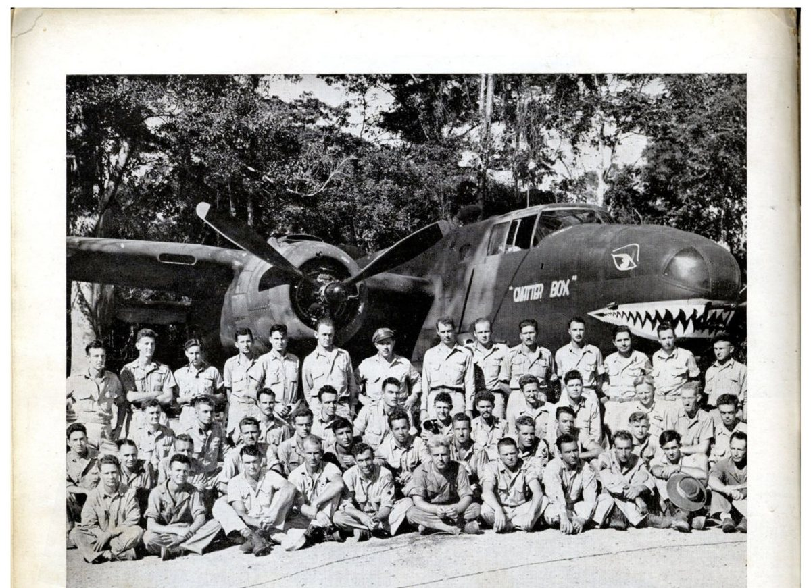
“90th Squadron men who participated in Bismarck Sea Battle,” from The Reaper's Harvest.
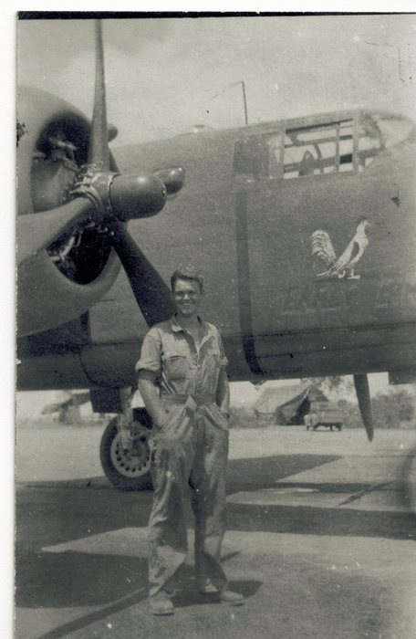
A serviceman in oil-stained coveralls stands between the propeller and the nose of a combat aircraft, with a white rooster painted on the nose above lettering now too faded to read. A tent and a truck stand at the edge of the strip behind him.
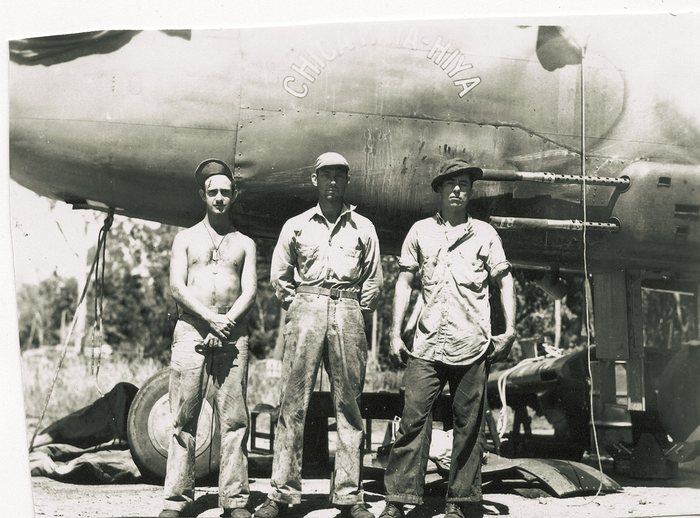
Three men stand under the nose of a bomber lettered in outlined capitals, the first letters reading CHIC and the last, past a worn stretch, HIYA; the man nearest the camera is stripped to the waist and wearing dog tags. Two pairs of machine-gun barrels project from the gun pack on the fuselage side, with the main wheel and a tarpaulin behind them.
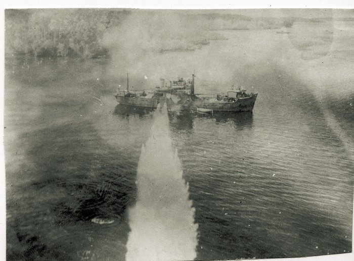
A low oblique aerial photograph of two small coastal vessels lying close alongside one another in sheltered water, with smoke or steam rising between their hulls, a boat made fast on the outboard side, and a narrow straight track of white water running across the surface toward them. A mangrove shoreline fills the top of the frame.
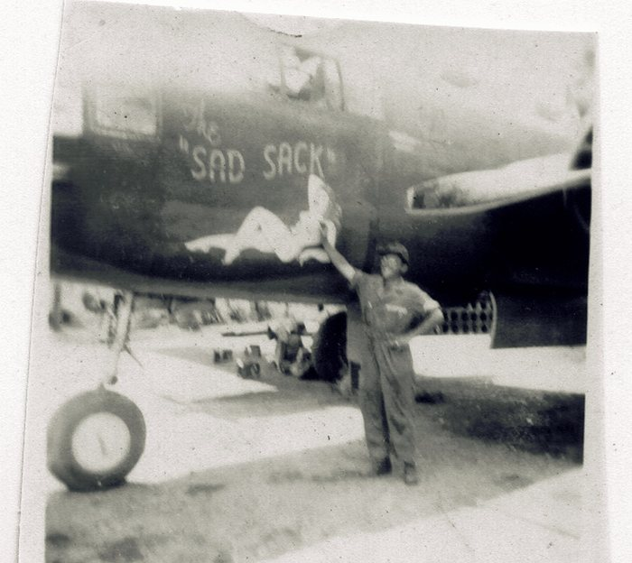
A serviceman in coveralls and a soft cap stands with one hand raised against the nose of a bomber lettered “SAD SACK” in quotation marks, with the cursive word “The” above it and a reclining pin-up painted below. A spare tyre stands upright on the ground at the left, and crates and equipment are stacked along the hardstand behind him.
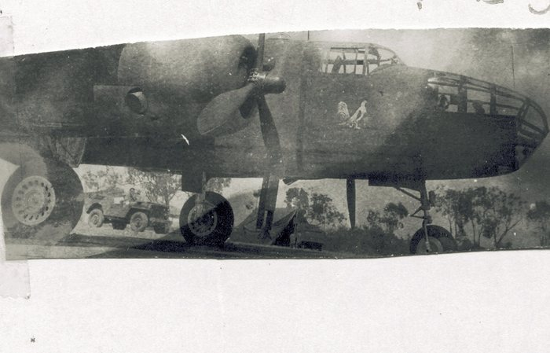
A twin-engined bomber standing on a dispersal, photographed from beneath the wing, with a white cockerel painted on the nose ahead of the cockpit glazing; a jeep with a driver at the wheel is parked under the fuselage, and scrub and gum trees stand beyond.
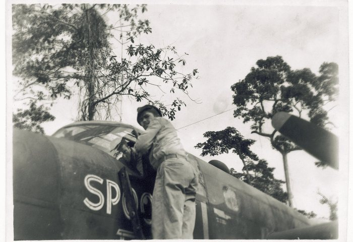
SPO -- painted across the nose and hatch. Here they are outlined capitals with a drop shadow, where the frames that show the back of the name have it in solid white. An aerial wire runs from the canopy back along the fuselage, a small dorsal dome shows above it, and jungle trees rise behind." loading="lazy" width="700" height="480" decoding="async">
Spook II. A serviceman in light fatigues and a soft cap leans into her open cockpit, an access hatch swung down beside him, the first letters of her name — SPO — painted across the nose and hatch. Here they are outlined capitals with a drop shadow, where the frames that show the back of the name have it in solid white. An aerial wire runs from the canopy back along the fuselage, a small dorsal dome shows above it, and jungle trees rise behind.
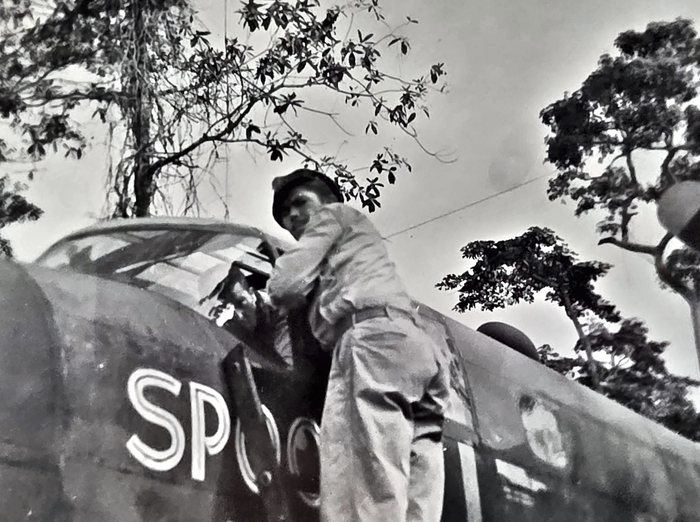
SPO, with the rest of the word behind the man's leg and the edge of the print. The back reads "Maj. Edward[?] L...": the rank Major is clear and the given name reads Edward, with Edmund possible, but the surname runs off the right edge of the photograph of the back rather than off the paper, so it could be recovered by re-photographing."Maj. Edward[?] L...": the rank Major is clear and the given name reads Edward, with Edmund possible, but the surname runs off the right edge of the photograph of the back rather than off the paper, so it could be recovered by re-photographing." loading="lazy" width="700" height="522" decoding="async">
The same photograph again, re-shot so the back could be read. The nose carries the outlined, drop-shadowed capitals SPO, with the rest of the word behind the man’s leg and the edge of the print. The back reads “Maj. Edward[?] L…”: the rank Major is clear and the given name reads Edward, with Edmund possible, but the surname runs off the right edge of the photograph of the back rather than off the paper, so it could be recovered by re-photographing.
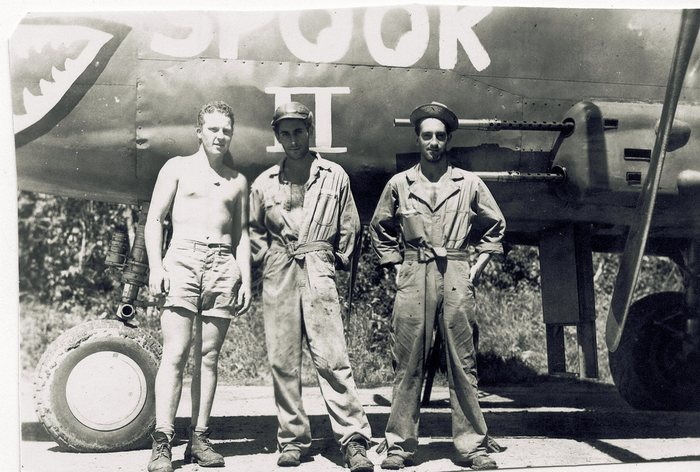
Three crewmen, one shirtless, beneath “Spook II.”
II in white serif capitals with a bar above and below; the word in front of it is cut off by the top edge of the print, and shark-mouth teeth show in the top left corner. She is Spook II. Another print in this collection shows the same nose from a little lower, with the word SPOOK standing above that same II; here the top edge of the paper has cut it off. This caption used to call her "Fat Cat II."" loading="lazy" width="700" height="468" decoding="async">
Crewmen standing at attention in front of a field-modified B-25 strafer. All that survives of her name is a Roman II in white serif capitals with a bar above and below; the word in front of it is cut off by the top edge of the print, and shark-mouth teeth show in the top left corner. She is Spook II. Another print in this collection shows the same nose from a little lower, with the word SPOOK standing above that same II; here the top edge of the paper has cut it off. This caption used to call her “Fat Cat II.”Crewmen load a belt of ammunition into the top turret of a B-25. The letters “OOK” show on the fuselage beside them — the back end of SPOOK, with the rest of the name out of frame.
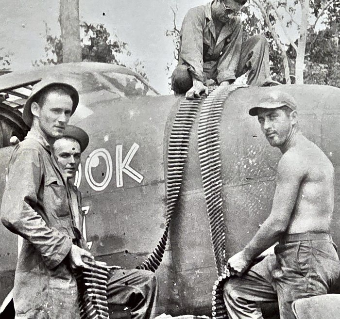
OOK stand on the skin in solid white capitals -- the back end of SPOOK, the rest of the name forward of the frame." loading="lazy" width="700" height="658" decoding="async">
The same photograph as the turret-loading frame in the ground crew section, re-shot from the print. Four men handle long belts of machine-gun ammunition at the fuselage of a B-25, two belts hanging in loops over the top from a man kneeling up there with a steel helmet beside him. The letters OOK stand on the skin in solid white capitals — the back end of SPOOK, the rest of the name forward of the frame.
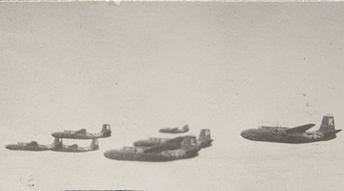
A loose formation of A-20 Havocs, photographed from another aircraft at height against an empty sky. At least five machines are in the frame, strung out in line abreast and stepped down, each carrying a single white letter on the fin — K on the nearest, P on the one in the centre. The print is a small contact print, faded and torn along the top edge.
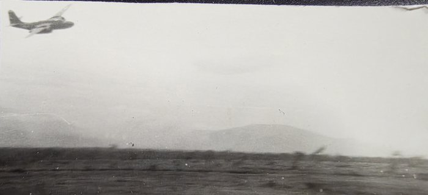
A twin-engine bomber banks away at the top left of the frame while the camera aircraft runs low over a coastline. Dark smoke stands in two or three columns along the shore in the middle distance, with a ridge behind it flattened by haze. The exposure is heavily burnt out in the sky and the print does not say where this is.
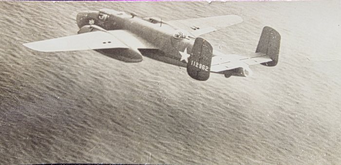
A B-25 Mitchell photographed from above and behind, flying low over open water; the wind ripple on the sea fills the whole background. The twin fins, the gull-wing break outboard of the nacelles and the retracted ventral turret under the rear fuselage are all clear, and the serial 112962 is painted in white on the outer face of the near fin. A white star without bars is carried on the rear fuselage ahead of the tailplane.
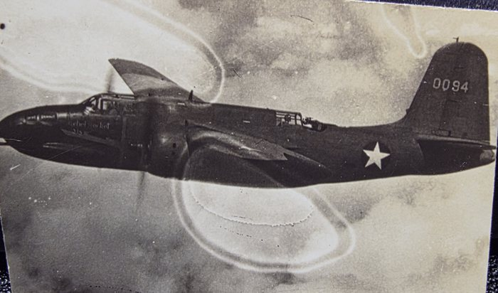
A twin-engined bomber photographed in flight from another aircraft, banking away so that the far wing rises above the fuselage line. The fin carries the number 0094, and a line of script nose art runs below the cockpit which the print is too coarse to read with confidence. The national insignia on the rear fuselage is a plain white star on a dark disc with no side bars, which places the frame before late June 1943.
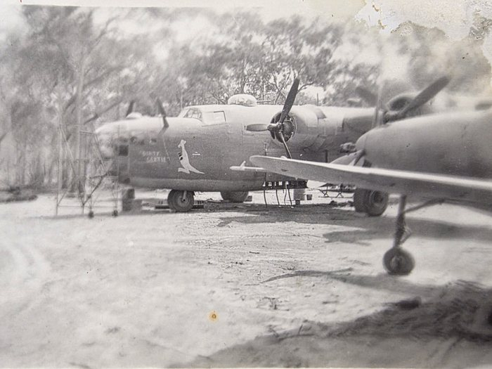
A four-engined bomber standing on a cleared dispersal, photographed from off the port bow. A white kangaroo is painted on the nose with the aircraft’s name in two lines of small white capitals beside it; the print is too coarse to read the name with certainty. A maintenance stand stands against the nose, and the wing, engine nacelle and undercarriage leg of a second aircraft fill the right of the frame.
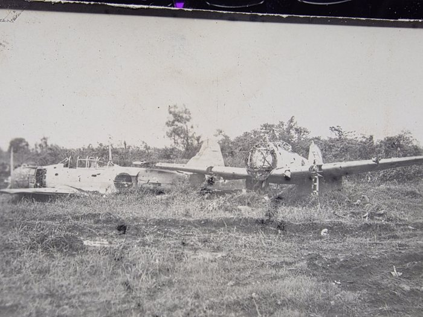
Two wrecked aircraft lying in long grass at the edge of scrub, seen from the side. Both have been stripped: cowlings removed and the engine cylinders left bare, glazing gone from the canopies with the frames still standing, and panels missing from the fuselage sides. The letters F-1 are painted on the fin of the right-hand machine.
Major Edward L. Larner in the cockpit of Spook II. This one is not Allen's photograph: it is a page from the 3rd Bomb Group's published unit history, The Reaper's Harvest, and it shows the same aircraft Allen photographed himself on the previous page.
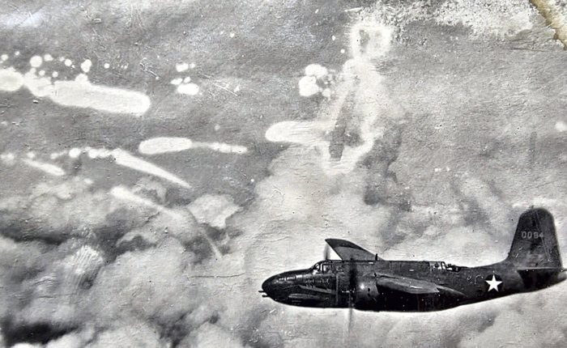
0094, and a plain white star-in-circle with no bars on the rear fuselage. The air ahead of and above it is streaked with pale puffs and trails of smoke." loading="lazy" width="700" height="430" decoding="async">
A Douglas A-20 Havoc seen in profile from slightly above, crossing the frame nose-left: a solid, unglazed nose — a field strafer conversion — a single tall fin carrying the number 0094, and a plain white star-in-circle with no bars on the rear fuselage. The air ahead of and above it is streaked with pale puffs and trails of smoke.
A B-25 Mitchell with its bombardier nose unmodified, parked at a dispersal, a white strutting cockerel painted on the starboard nose below the cockpit. A jeep with two men aboard, a tarpaulin shelter and a stake-bed truck stand in the sunlit background. Two other prints here show the same cockerel with EARLY BIRD lettered beneath it, so this is probably that aircraft; no name is painted below the bird in this frame, and no serial or unit marking is in view.
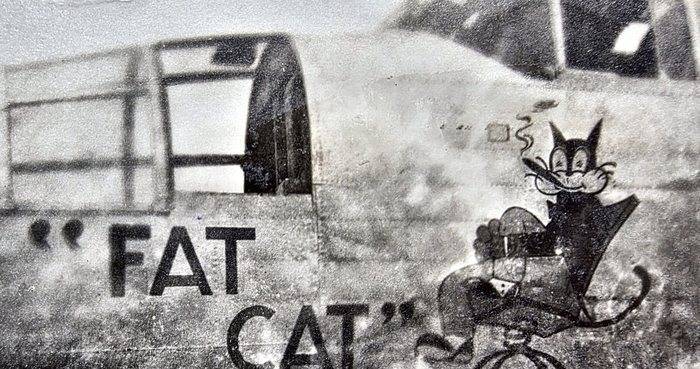
“Fat Cat,” a B-25 Mitchell of the 3rd Bomb Group, on the line in New Guinea. The black cat in its deck chair with the cigarette, the parasol beneath it and the name staggered in quotation marks match, detail for detail, published photographs of Fat Cat taken at Dobodura in about September 1943.
A Curtiss P-40 — a single-engine low-wing fighter with an inline liquid-cooled engine and a tailwheel — standing on a grass field, its fuselage and upper wing painted with large white crosses and its fin and rudder in broad stripes. A cargo truck is parked at the left behind the tail; at the right, in front of a long open-sided shed, stand a truck fitted with a boom and further aircraft carrying the same white markings, one of them cut by the edge of the print, with pine woods along the far edge. Its back is rubber-stamped “DO NOT MAIL” in block capitals and carries no censor stamp.
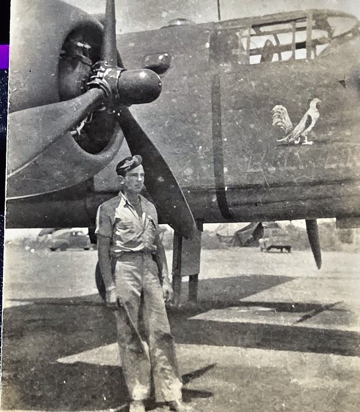
A man in shirtsleeves, trousers and a garrison cap stands beneath the nose of a B-25 Mitchell, a three-bladed propeller above his head and the white rooster of EARLY BIRD on the starboard nose. The name itself is not legible in this frame; the aircraft is identified from the bird. Vehicles, tentage and stacked gear stand on the open field behind him.
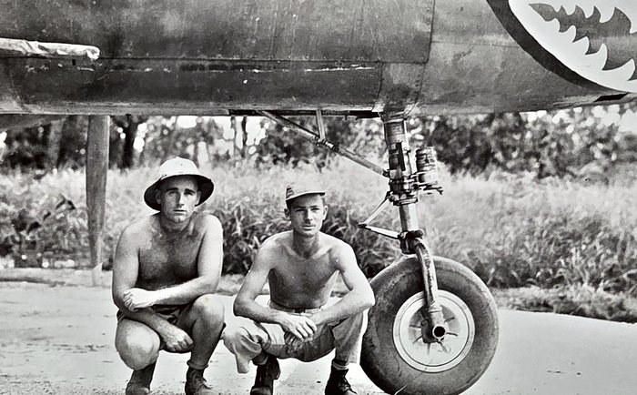
Two bare-chested men crouch on the strip beside a main wheel and its oleo strut under an aircraft wing, one in a pith helmet and one in a fatigue cap. Above and to the right, a row of painted white teeth runs along the fuselage, part of a shark-mouth marking.
A narrow strip of a photograph showing a parked bomber from the side — a wing running out to the left with its tip toward the camera, the framed cockpit glazing and a rounded engine cowling below it, and a large plain white star national insignia, with no bar, further aft on the fuselage. One man in light clothing stands at the wing root beside the engine, and a low treeline runs behind the aircraft. No name is written on the back; the reverse carries only the censor stamp “PASSED BY / BASE / 2415 / U.S. ARMY / EXAMINER”.
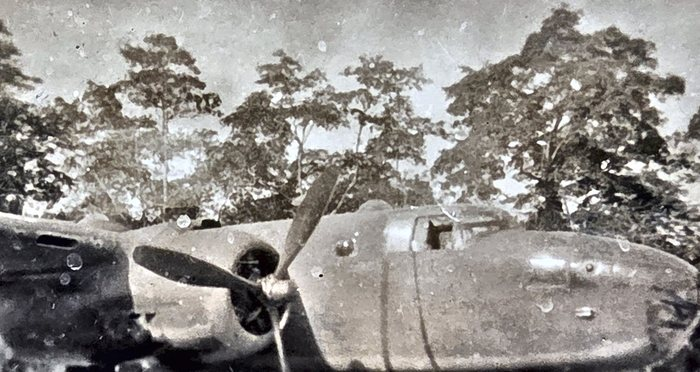
The nose, cockpit glazing and one three-bladed propeller of a bomber standing in a clearing at the edge of tall timber, with no one in the frame. The back of this print is rubber-stamped “DO NOT MAIL” in block capitals, with ink writing added over the stamp afterwards and no censor stamp.
Unit Signs
A camp sign reading “FRISCO” with a short list of names beneath it.
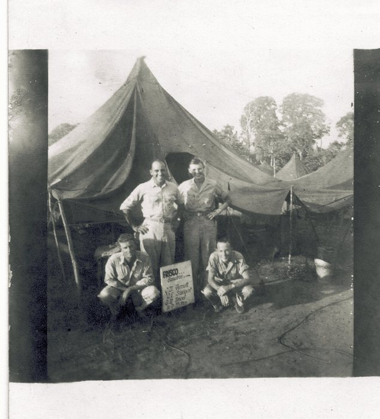
Four servicemen pose beside the same “FRISCO” sign. Allen is standing at the left.A “90th SQ Radio” sign beside the squadron's news bulletin board.
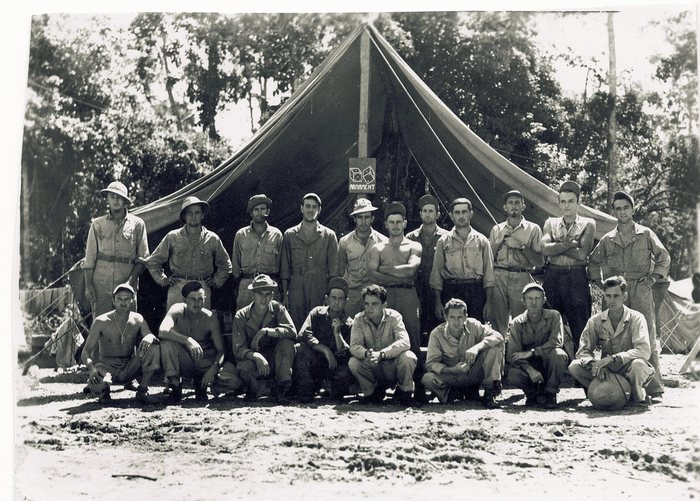
Nineteen men in front of an “Armament” tent sign with painted dice.
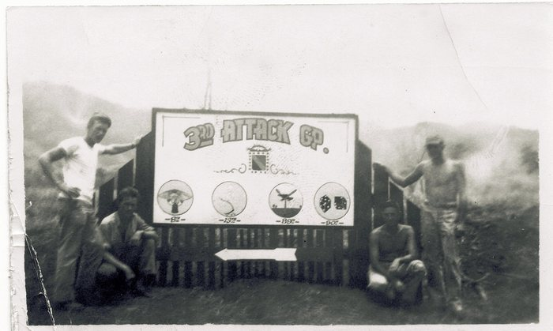
The “3rd Attack Gp” sign, with all four squadron insignia: 8th, 13th, 89th, 90th.
Ground Crew at Work
Maintenance, munitions, and the daily work of keeping the squadron flying.
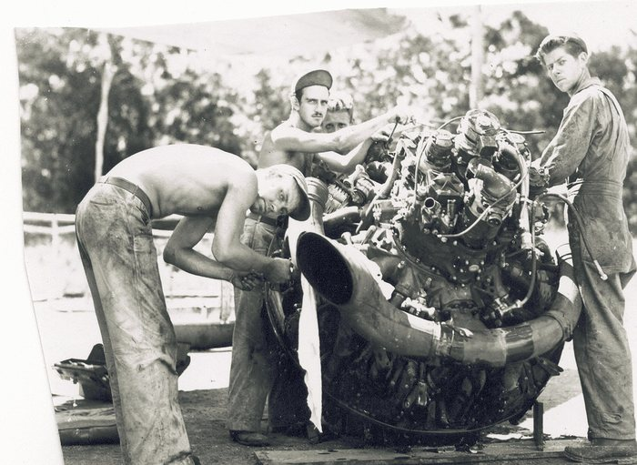
Ground crew work on an exposed aircraft engine.
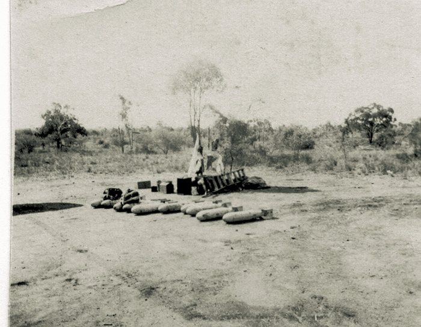
Bombs laid out on the ground beside wooden crates.
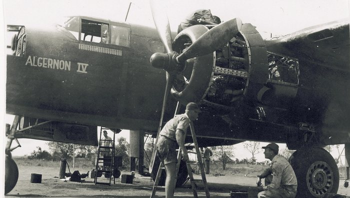
ALGERNON IV in block capitals with the Roman numeral. A faint outline cartoon figure is sketched on the skin above and left of the name, and a row of mission symbols runs under the cockpit." loading="lazy" width="700" height="396" decoding="async">
Engine maintenance on a bomber lettered ALGERNON IV in block capitals with the Roman numeral. A faint outline cartoon figure is sketched on the skin above and left of the name, and a row of mission symbols runs under the cockpit.
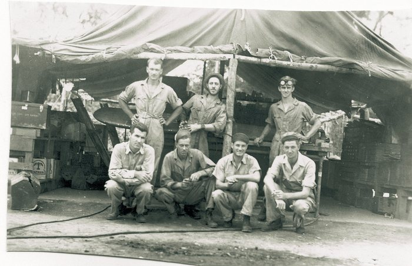
Seven servicemen at a maintenance area stocked with fuel drums.
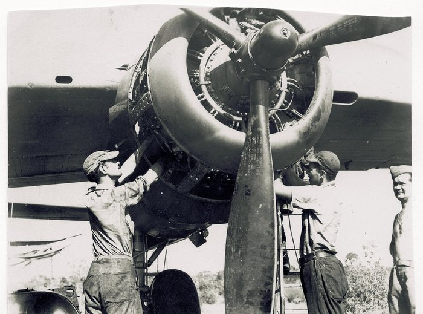
Mechanics working on an exposed twin-row radial engine, the propeller, nacelle and one mainwheel filling the frame. The blade carries its data stencil, legible when the print is turned upright: “DWG. NO. 6353A-18 / A.C. NO. 41-0107[4] / LOW PITCH 22 / HIGH PITCH [80] / INSTALLED-7-10-42.” That last line is a date: this blade went on in July 1942.
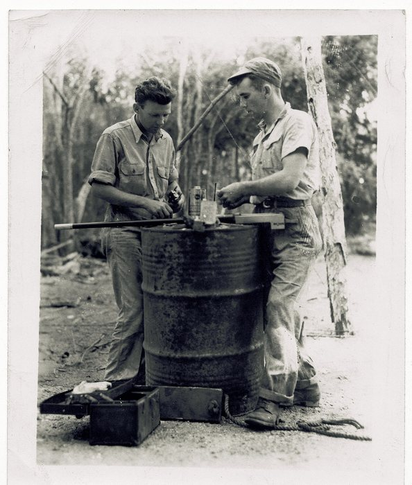
Two servicemen clean a rifle barrel on an oil-drum table.Bombs loaded onto a wheeled trailer beneath a B-25's open bomb bay.
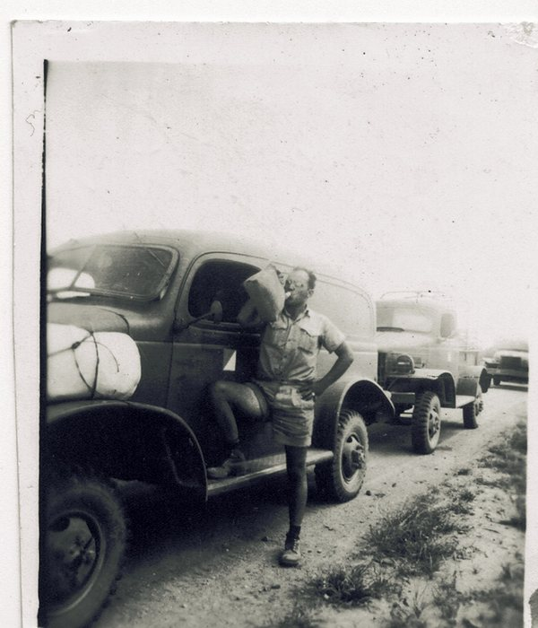
A truck convoy loaded with servicemen — that's Allen taking a big swig from a large water jug.
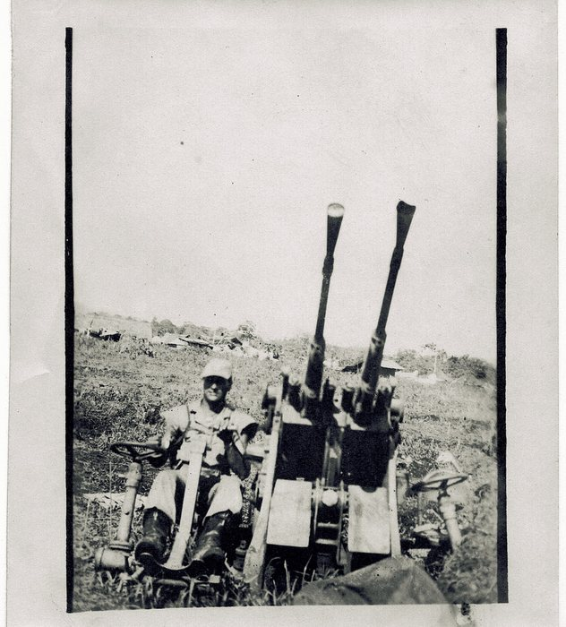
A twin-barrel anti-aircraft gun position, gunner at the ready — airfield defense at one of the squadron's bases.
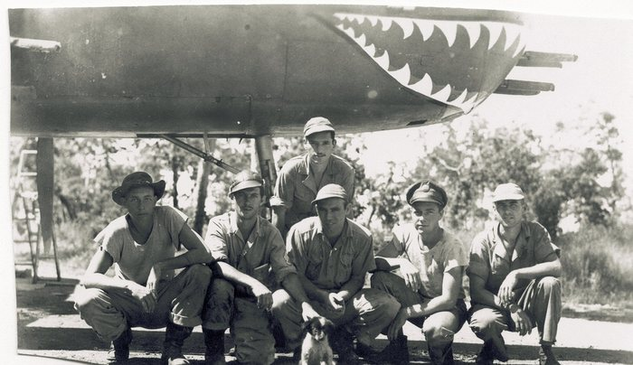
Five men crouch in a row beneath the nose of an aircraft while a sixth stands behind them, the nose painted with a shark’s mouth of white teeth and four machine-gun muzzles projecting past it. A small dog sits at the feet of the two men in the centre.Seven servicemen grouped under the wing of a parked aircraft, the white national star insignia on the underside directly above their heads. Five stand in khaki shirts, bush hats and one sun helmet, while two crouch in front, one of them stripped to the waist; a squad tent and folding cots stand behind them at the edge of tall timber.Four servicemen stand in a row in front of a screened tent-front hut, beneath a small painted board over the doorway reading “TECH SUPPLY”. Two are bare-chested, one of them in cut-down shorts with boots and rolled-down socks, and a parachute harness, cartons and cans sit on the shelving behind them.Sixteen men gathered in front of a tarpaulin-roofed hut with a wooden gable and screened window, jungle trees behind and a second tent pitched at the right, with another man cut off at the left edge of the frame. Four crouch in front, several wear sun helmets or soft caps, one has a pipe in his mouth, and one man’s steel helmet carries a name painted across the front that is now only partly legible.Four men crouch beneath an aircraft’s undercarriage leg, the oleo strut and its linkage hanging from the flat underside of the airframe directly above their heads. Three wear light khaki shirts with rolled or cut-off trousers — the man at left with a winged badge at the breast — the fourth a darker work shirt and a knitted cap; two of them have moustaches.Two men work over an upturned oil drum standing in for a bench, with a vise clamped to a board across the top of it beside an oil can and a small bottle; a metal tool box sits on the ground and a length of rod rests across the drum.Eleven men pose outside a corrugated-iron hut with an open upper wall, five kneeling in front and six standing behind, in fatigue shirts, caps and bush hats, two of them stripped to the waist. A large urn stands on a bench at the left.Two servicemen in khaki stand beside a snub-nosed military lorry with a wire-mesh grille guard, a canvas cab top and heavy off-road tyres, on a stony clearing at the edge of dry scrub; the man on the left wears a broad-brimmed field hat, the man on the right holds something small in both hands.Nine men in khaki shirts and trousers along the front of a long camp building, its raised floor skirted with corrugated iron and its upper wall left as open framing, with tall grass growing up in front of them. One man, in a soft fatigue cap, sits perched on the sill with his legs crossed and his hands in his lap; several of the others wear spectacles.
Five men in worn, oil-stained coveralls and fatigues stand in a line in front of a bomber’s nose lettered “EARLY BIRD”, the last letter clipped by the top edge of the print; three wear soft fatigue caps, one a broad-brimmed bush hat and one is bare-headed, and a mainwheel and strut show at the right.Four men line up beneath an aircraft wing, the man at left in coveralls and a sun helmet with his hands on his hips and the three beside him bare-chested in work trousers and belts. A maintenance ladder is propped against the wing and a main wheel stands behind them; the frame is cropped so that two of the heads are cut off at the top.A low four-wheeled bomb trailer, its slotted bed loaded with finned bombs, stands on a bare strip, coupled to a second trailer of the same pattern at right with a vehicle’s wheels beyond. Behind it are the mainwheels and undercarriage of a large aircraft, one figure on foot at the treeline.Two men stand beside an aircraft: one bare-chested in cut-down shorts, socks and laced boots with a soft cap, his arm stretched out and his hand resting on the other man’s shoulder, the other in a long-sleeved work shirt and trousers. A main wheel is at right and stacked equipment lies in the shade behind them.
Life in Camp
Daily life at the squadron's forward strips in New Guinea.
Jungle camp buildings, one signed “90th S.Q. Intelligence.”A muddy tent camp among the trees — everyday field conditions.Three servicemen relax inside a tent, one smoking a pipe.Allen relaxes in a folding camp chair, laundry on the line behind him.Servicemen gather around a large cooking pot at the outdoor kitchen.Servicemen sit at a wooden table writing letters home.A hand-lettered camp canteen sign advertises beer and cigarettes.About twenty-five servicemen at a chapel service under a thatched roof.The same chapel service, closer in — Allen, in the white shirt, hymnal open beside another man still shirtless from the heat.The camp’s open-air shower — a makeshift stand rigged for the men on the slope, with servicemen gathered round it.The squadron, more than a dozen men, lined up in two ranks before a camp building.A group of servicemen, freshly washed up, one wrapped in a towel.The squadron's makeshift club tent, decorated with hand-painted pin-up art typical of the era.Tents pitched among tall jungle trees, campfire coals smoldering in the foreground.
A row of large pyramidal tents pitched on raised timber floors among tall rainforest trees, with a laundry line strung between the trunks, oil drums standing at the right, and cut branches and split logs scattered across the churned ground.Allen sitting on the ground in a white undershirt with a pipe in his mouth and a towel round his neck, wearing boots with white socks turned down over the tops, in a camp of thatched and canvas shelters. A laundry line of shirts and towels is strung at the right, and behind him two tall stripped poles carry thin wires, one with a small box fixed part way up.A serviceman stands stripped to the waist in a pith helmet with a pipe in his teeth, wearing cut-off shorts, a wristwatch and boots, with identity tags on a chain around his neck. Behind him are a tent, mosquito netting and a canvas deck chair, and two pale tins stand on the bare ground at his feet.Four men arm in arm on a dirt track in open scrub country, Allen third from the left: three in shirtsleeves and soft caps, the second from left in a peaked service cap and necktie. The man at the left wears a senior sergeant’s chevrons on his sleeve.A serviceman in a belted one-piece work suit with a canvas bag slung across his shoulder, standing in front of a dark building opening, his hair, face and eyebrows caked with a pale dust or powder.Three men pose for the camera in a scrubby clearing: the man in the centre stands grinning with both hands raised, while the two flanking him level rifles at him, one in shirt and cap with a second rifle slung on his shoulder, the other stripped to the waist.Three men at work inside an open-sided building with a thatched roof on rough timber posts: two at a table on the left, one of them seated in a canvas chair, a typewriter on a bench in the middle of the room, and a third standing at a bench on the right. The glare through the open walls swallows the far end, so there is no telling whether anyone else is in the room.Four men stand in front of a squad tent pitched against a wooded hillside: one in a steel helmet with sergeant’s chevrons on his sleeve, one in coveralls, one in shirt and trousers, and one bare-chested in shorts. A furled flag on a staff stands between the first two men, and a thin pole leans upright between the last two.Three men at a bathing place on a wide, slow river: two out in the water with only their heads and shoulders showing, and a third sitting bare-chested on a fallen tree that leans out over the surface from the scrub of the far bank.Two men stripped to the waist stand chest-deep in a jungle river, hands resting on a long felled trunk that lies out across the water from the bank beyond them, where tall grass and scrub give way to rainforest.Allen at the right of three servicemen in khaki shirts and trousers, two of them in field caps, standing shoulder to shoulder in front of a timber building raised on posts with part of its roof thatched; a log rail and steps run up to the building on the left.Allen, bareheaded, in a light shirt and trousers in a camp of pyramidal and tarpaulin tents, with a ridge of cloud-covered high ground behind him. Guy ropes run down at right, where a pale bag and a flat woven mat lie on the ground under the tent fly.Allen in a garrison cap, light shirt and trousers, crouching on bare ground in front of a large tarpaulin shelter rigged on poles, with further tents and eucalyptus-like trees beyond.Allen in a peaked fatigue cap and work shirt, sitting on a rough timber rail with one boot up, dense vines and jungle foliage behind him and a low table or crate at right.Allen in shirt and trousers on a folding chair beneath a shelter built of poles and split logs lashed against a large tree, papers spread on the bench beside him and a white enamel pan on the ground at his feet.Half a dozen men at a swimming hole shaded by overhanging gum trees, one standing waist-deep in the water in a dark singlet while the others gather on the rocks and fallen limbs of the far bank. Clothing hangs drying from the branches above them.A man sits on a wooden crate at a bench inside the open end of a tent pitched under a spreading gum tree, its canvas fly stretched out over the entrance and propped on cut saplings. Packing cases stand at the doorway and a cable runs across the bare ground into the tent.A tabby kitten rears up against a wooden step or sill, reaching toward a man’s open hand; only his white sleeve and dark trouser leg are in the frame.
A hand-made squadron signboard of corrugated iron, its raised letters reading “90TH ATTACK SQ” below a painted panel of a palm-fringed bay with aircraft flying over it, and a scythe-bearing figure on a shield at the right end. Pyramidal tents stand in the grass behind the board, and the edge of a second print of the same sign shows along the bottom of the frame.
Allen in a work shirt and shorts, leaning against the closed steel cab of a military truck with one boot up on the running board and a cigarette in his mouth, a pale bundle lashed to the front fender and a line of further trucks stretching away down the dirt road behind. The back carries a caption rather than a name: only the first word “Driving” and the closing line “in Australia.” can be made out, the pencilled words between them past reading.A serviceman in a one-piece work suit with the sleeves turned back stands bareheaded on bare ground beside a tent, its canvas wall drawn up and a folding wood-and-canvas camp chair set at the entrance, with open scrub and thin trees behind him. Named on the back as R. L. Thomas of Arlington, Massachusetts; the print also carries a US Army censor stamp.One man stands alone in a cleared patch of open ground, hands on his hips in light trousers and shirt and a soft cap, with scrub and trees close behind him. The back gives the surname Miller with “N. G.” for New Guinea and the date “11/42”; the given name is written in a hand that reads as “Hank” to one eye and “Herb” to another.
The Crew
Allen, wearing glasses, seated under the trees.A close head-and-shoulders portrait.Allen, smiling, in a formal seated portrait.Two servicemen, one wearing a winged insignia pin.A seated serviceman with wavy dark hair.A smiling seated serviceman.A seated, balding serviceman.Allen, sergeant's chevrons visible on his sleeve, in a formal portrait.
Three men in khaki shirts and trousers, two of them in caps, stand arm in arm in front of a raised hut with a thatched eave and a log railing; the back of the print carries three pencil signatures, all of them too faint to read with any confidence, so the three of them go unnamed.Four men pose in front of an aircraft, two standing — one in coveralls, one in a work shirt and trousers — and two crouching in front; the man at lower left wears a broad-brimmed slouch hat with a hat badge and three chevrons on his sleeve. Drums sit on a timber rack at right and a bench stands in the shade beneath the fuselage behind.
Three men in shirtsleeves on a dirt track at the edge of scrub bush: one kneels in the foreground in a dark shirt and cap, another crouches barehanded over something on the ground, and a third stands behind in a light shirt. The back gives three surnames with home states and the caption “Cracking Coconuts” — “Sweigert Pa.” is Allen naming himself, alongside “Davidson Ky.” and a first surname read uncertainly as Funell, Furrell or Fennell.
Passed Down
The Reaper's Harvest never left the family. Jeremy Sweigert, who recorded the interview these pages are built from, still has Allen's own copy — along with two of his actual flight suits and a wider collection of his wartime artifacts and photographs, only some of which are shown here.
Jeremy, 2017, in one of Allen's own flight suits — the 90th Squadron reaper on the chest, the same emblem that runs through these pages — holding Allen's own copy of “The Reaper's Harvest.”Allen and Jeremy Sweigert, Memorial Day 2006 — the same visit this interview was recorded on.A boy in glasses stands in a panelled room wearing an oversized Army olive-drab service coat, its master sergeant chevrons on both sleeves, “U.S.” and squadron-style insignia discs on the lapels, a ribbon bar and a shoulder patch on the left arm; the back identifies him as Allen’s grandson Jeremy, in 1986, wearing Allen’s own coat while going through the war collection.
The Radio Section
His own trade, photographed from the inside.
Nine men, five standing and four crouching, in front of a tent with its side flap propped open on a pole and a large pale chart pinned up inside. A dark equipment case fitted with dials and small panels stands on the ground at the left, and a slender antenna mast with its wire rises at the right of the group; two of the men wear sun helmets and one of those crouching is in a T-shirt.Three men in a tent fitted out as a radio shop: two work standing at a bench of receivers and test gear, while a third sits back in a folding canvas chair and looks at the camera. A small plate on one set is lettered “WO7”, and a chalked board hangs on the tent wall behind the bench.A grinning man in a white T-shirt, hand on hip, stands beside a framed hand-painted sign reading “90TH SQ.” with a pair of dice and, below, “RADIO”; a board at the right is lettered “LATE WORLD N...”. The back carries a big flourish of a pencil signature, read as “John B. H——“ by one eye and given up as illegible by another, along with part of a censor stamp; the grinning man stays unnamed.
The Mess, and What Was In It
He remembered corned beef, powdered lemonade and two bottles of beer a man. These are the kitchens it came out of.
A man in a cook’s white jacket and white cap lies on the grass beside a wooden building, holding a tabby kitten against his chest. A long dark barracks with a row of windows and a stovepipe on the roof runs away behind him.Two dozen or more men line the front of a long, open-sided building with corrugated-iron walls, many of them holding mess kits and cups, in a stand of tall slender trees. The ground in front is churned mud with a fallen log lying across it.A field kitchen under a timber-truss roof open along both sides, with cooks in white aprons and men in fatigues working over field ranges; large aluminium stock pots, open cans and stacked pan lids crowd the benches in the foreground.A serviceman in light one-piece coveralls kneels at the end of a tent beside a field wash line, one hand steadying a board across a galvanised can while a canvas tub hangs above it from a rope bridle; oil drums and a shallow pan stand on the bare ground behind.
Ashore at Hollandia
“We came in with the LSTs and waded in there, and then everybody was standing around the beach.”
Seen from above, a double column of trucks, trailers and jeeps stands nose to tail along the edge of the palms at a landing beach, with men moving across the open sand and small craft drawn up at the waterline in the distance. A large pale circular object — a spare wheel or a coil — rides on top of the load of the nearest truck.Three servicemen on a large wreck of heavy timber and riveted steel plate, snapped through near its centre and lying on a flat of dried mud and sand. One stands on top stripped to the waist in shorts, one sits on the broken edge in fatigues, and one stands below it wearing a cap; a line of palms runs along the horizon.A group of captured Japanese soldiers, eight or nine visible, stands on a shoreline track with their belongings tied up in cloth bundles and a canteen in one man’s hand; some are in uniform shirts and field caps, others stripped to undershirts or bare to the waist. A further man in a light shirt and soft cloth cap walks along the track behind them, with water and a far shore beyond.
A serviceman in light khaki, his back to the camera and a flap pouch on his belt, stands over a heaped dump of captured Japanese weapons: machine guns with ribbed and perforated barrel jackets, bipods folded beneath them, flared muzzle cones and top-mounted feed housings, piled shoulder-high at the back. Around the foot of the pile lie large flat drum magazines pierced with a ring of holes, faceted metal ammunition canisters, loops of belted ammunition and light wooden crates — some packed with loose cartridges, one stencilled with a single character that appears to be Japanese. Empty fuel drums stand in the grass behind.
The Country, and the People In It
“We made several trips up to the native village to see how it was.”
A man high on the trunk of a coconut palm, arms wrapped around the bole just below the crown, photographed from the ground looking up through a stand of palms.Allen, in shirtsleeves in the low jungle undergrowth, holding up a snake long enough to loop down to the ground beside him — the pale corner of a tent showing through the trees behind. Identified by the family.
Five servicemen — four in sun helmets, one stripped to the waist — stand for a group photograph on a jungle slope with a New Guinean woman and a girl, who are in the front rank facing the camera: the woman in a dark wrap with a pale cloth apron and her hands held together in front of her, the girl beside her bare above the waist in a skirt of hanging fibre. A further head shows at the back of the group, too indistinct to count either way, and a lone figure is silhouetted on the rise behind.A New Guinean village house raised on a forest of rough posts, its roof deep in sago thatch, a notched log ladder leaning up to the doorway and more houses of the same build running away behind it under a stand of coconut palms. Across the sand in the foreground, in thin white letters, “Greetings — New Guinea”, and below and to the right of it, set like a signature, “Joe”.A shore photographed from out on the water: a dense wall of coconut palms and heavier trees, a narrow strip of pale sand, and drawn up along it a line of outrigger canoes, their booms showing as thin struts against the beach. Two low shelters stand back at the tree line.Palm trees silhouetted against a hazy New Guinea shoreline.
Three servicemen sit in a row along a heavy log rail in front of a New Guinean house raised on a forest of thin posts, with a sago-thatch roof and plank and woven walls; two of them are bare-chested and two wear wide sun helmets. At the right end of the rail a New Guinean child stands beside them, bare-chested and barefoot in a pale cloth wrap, turned away from the camera. A second house of the same build stands in the left background, fogged by a light leak. The back names the men in pencil — “Dutchman / Gillmer / Haskin” — and then places and dates the picture: “outside hut in New Guinea. Nov. 1942.”
One wide print, not two. A dispersal road runs across the upper half with a Dodge four-wheel-drive pickup at the left, a GMC cargo truck with slatted sides at the right and a man walking between them; in the foreground three American servicemen stand with a group of New Guinean people, four of the women in fibre skirts, while a propeller blade and a large cylindrical store fill the right of the frame and another man reaches up to the aircraft behind them.About thirty New Guinean villagers gathered for the camera on cleared, burnt-over ground, with four servicemen standing behind them. The children make up the front two rows; several of the adults behind hold upright staffs. A woman stands a little apart at the right in a dark upper garment and a paler skirt.
Three young women stand close together facing the camera, low scrub behind them. The two at centre and right wear long garlands of pale flowers over the shoulders and skirts of hanging fibre and are bare above the waist, the centre one with a band of flowers set across her hair; the woman at left wears a dark patterned shirt with her garland over it. All three are smiling. The print is a small one, worn at the edges and scratched across the emulsion.
A gathering on cleared, trampled ground with tall thin trees behind: twenty or more people in long cloaks and skirts of hanging fibre, several of them carrying bundles taller than themselves — broad, curved and tapering to a point, possibly rolled matting or sheets of bark — up on the shoulder. A child of about ten stands square to the camera in the foreground in a fibre cape and skirt, holding a tall thin staff, with others holding staffs behind. Two men in light shirts and trousers stand watching at the left, and the crowd runs away up the rise to the tree line. The print does not say where this is or what the occasion was.Two children stand on pale sand, each with both arms raised to steady a large rounded load at the head and shoulder; the copy print is too coarse to say what the loads are. A fan of palm frond and a scuffed hollow in the sand lie between them. Neither child is clothed.
Two men stand facing the camera at the edge of a crowd. The one on the left is bare-chested in a white wrapped cloth and belt, with shell bands on both upper arms and a long pendant on a cord; the one on the right wears a dark long-sleeved jersey over a dark wrap, a broad belt and shell bands at both wrists, and holds an upright wooden shaft in one hand and a thin cane in the other. Behind them stand dozens of people in tall feather headdresses, several carrying hourglass drums.
The Men in the Frame
A run of single portraits from his collection, most of them made against a hung blanket or a tent wall. Some of these prints were written on the back and some were not; where a back gives a name the caption gives it, and the rest go unnamed unless the family knew the face.
Two young servicemen sit side by side in front of a dark doorway, both in light open-collar summer shirts with the sleeves rolled. A small winged badge is pinned above the left man’s breast pocket; the print is too coarse to tell which qualification wings they are.A serviceman in light summer khakis and a garrison cap stands on a paved garden path, a low brick wall and dense flowering shrubs behind him. Above the wall rises the rusticated masonry facade of a large building, its tall windows fronted by small stone balustrades, the top of it cut off by the frame.Allen, in spectacles and a soft fatigue cap, sitting on the ground against a wall of jungle growth, sleeves pushed above the elbow and his wristwatch on his left wrist. Identified by the family.A waist-up portrait of a young serviceman, his hair combed back, seated in an open-collar shirt with the sleeves rolled to the elbow, his forearms crossed and hands clasped in his lap.A young serviceman sits with his arms crossed over his knee in a light open-collar shirt with the sleeves turned up; a second man’s arm and shoulder are cut off at the left edge of the frame.A young serviceman in a light open-collar shirt sits smiling against a dark panel or wall; the shoulder of another man is just visible at the right edge.A young serviceman in a light shirt and trousers, seated with his hands on his knees against a plain stucco wall. The shoulders of the men on either side of him show that this small print was trimmed out of a larger group photograph.Close portrait of a fair-haired serviceman in an open-collar shirt, seated in front of a dark wall; a neighbour’s shoulder at the lower left corner shows the print was cut from a group photograph.A serviceman with his hair combed to one side sits with his hands in his lap against a mottled concrete wall, in the same light shirt and trousers worn by the other men in this set of trimmed cut-outs.A slightly built serviceman sits in a short-sleeved shirt with the cuffs turned back and his hands in his lap, against a mottled wall; the arm and leg of the man beside him remain at the right edge of the trimmed print.A serviceman in a two-pocket shirt with the sleeves pushed up sits with his hands in his lap in front of a grainy wall; the arm and knee of the man next to him are still visible at the left edge where the print was cut down.
A bare-chested serviceman in a broad-brimmed campaign hat stands among pitched tents with a pipe clenched in his teeth, dog tags on a chain, a wristwatch on his right wrist and a slender tool handle gripped in his left hand. Named on the back as William Gatzman, with the home town written “Bugaloosa Ala.” — kept just as it stands, though the Bogalusa on the map is in Louisiana.A young man with his hair combed back sits facing the camera in a light shirt with flap breast pockets, his hands in his lap and the shoulder of another man just visible at the left edge. The back reads “Glenn W. Snoo...”, the surname running off the right edge of the frame — Snow, Snook and Snodgrass are all possible — with “Liberty, Kans” beneath it.A wavy-haired man sits in a light open-collar shirt with two flapped breast pockets, half-smiling at the camera, the shoulder of the next man showing at the right edge. Named on the back as John B. Nunn of Springerville, Arizona.Leonard Cyr of Norway, Maine. A much-faded seated portrait of a young man in a light open-collar shirt with the sleeves turned back, hands in his lap, against a dark mottled backdrop; the back reads “Leonard Cyr.” with “Norway, Maine” beneath it and carries a US Army censor stamp.A young man in a light short-sleeved open-collar shirt sits cross-legged on the ground, hands resting in his lap, with the shoulder and knee of a second man just inside the left edge of the print. The back names him as Wilton M. Bunn of Troy, North Carolina — the given name clear, the surname doubtful — and carries a US Army censor stamp.Waist-up portrait of a young man in a light open-collar shirt with the sleeves turned back, arms folded across his chest, looking straight at the camera. Named on the back as Kenneth E. Radlein of 994 North Ave., Des Plaines, Illinois; the print carries a US Army censor stamp.A young man in a light open-collar shirt, photographed head-and-shoulders against a dark wall, with another man’s shoulder at the right edge of the frame. Named on the back as “Rod. Leonard” of Berkeley, California; the print carries a US Army censor stamp.A serviceman stands in rough grass with scrub and trees behind him, wearing a bulky sleeveless vest over his shirt and trousers, hands at his waist. The back reads “Me in life vest and parachute” over a fast signature read, tentatively, as “Alex Garcia”. A man who writes “Me” is very probably the man standing in the picture. There is a US Army censor stamp on the back as well.A serviceman in one-piece coveralls and a pith-style sun helmet stands hands-on-hips on cleared ground, a web belt at his waist with a dark holster at his left hip, felled timber and dense bush behind him. The back carries a single signature read as “Haskin[?]” — Haskins or Hoskin are also possible — with “N. G.” for New Guinea, and the censor stamp “PASSED BY / BASE / 2415 / U.S. ARMY / EXAMINER.”A bare-chested man in belted shorts stands squarely facing the camera on open, dry scrubland with thin trees behind him, the small print shown as it was photographed on a desk. The back reads “George E. Thom...”, the surname running off the edge of the print after “Thom”.A serviceman in a dark one-piece work suit, belted at the waist, stands with his hands on his hips in open grassland, a fallen dead tree lying behind him and low scrub along the horizon. Named on the back as S. L. Taylor — the middle initial could equally be an R — with no home town given, and the reverse carries a US Army censor stamp struck twice.A young man sits with his hands loosely in his lap, wearing an open-collared light shirt with two flap breast pockets and the sleeves rolled above the elbow, photographed against a mottled backdrop. The name line on the back is clipped by the edge of the frame and cannot be read; below it the back gives “Westphalia, Kan”, and part of a US Army censor stamp survives.
A young man sits smiling for the camera in a light open-necked shirt with breast pockets and turned-back sleeves, a belt at his waist and his hands folded in his lap, with the white sleeve of a second man at the right edge of the print. The back gives the surname as “Hoskins[?]” with the given name clipped by the frame, and beneath it “Galveston, Texas”; the censor stamp reads “PASSED BY / BASE / 2415 / U.S. ARMY / EXAMINER”.A young man sits for the camera in a light short-sleeved open-collar shirt, hands folded in his lap, with the sleeve and shoulder of the man beside him cropped away at the right edge of the print. Named on the back as Henry “Hank” Mille— of Pittsfield, Massachusetts, the surname running off the edge of the print. Miller is the obvious guess, but the paper does not say so.A thin-faced man sits in a light open-collar shirt with two buttoned breast pockets and a web belt at his waist, hands resting in his lap; another man’s sleeve is just visible at the right edge. Named on the back as Henry Gosztyla of Hamtramck, Michigan.A young man sits square to the camera in a light open-collar work shirt with a flapped breast pocket, arms low in his lap and the arms of the men on either side cropped at the edges of the print. Named on the back as James Frenell[?] of Cairo, Illinois — the surname is drawn F-r-e-n-e-l-l and Fennell may be the intended spelling.A fair-haired man in a light service shirt with a buttoned breast pocket turns his head to look off to one side of the camera. Named on the back as James W. Gillmer of Miami, Florida, though the surname could as easily read Gillner or Gilmer.A man in a dark work shirt and trousers crouches on bare, dry ground among low scrub, a fallen bare-branched tree lying behind him, holding something small in his cupped right hand. The back of the print reads “L. L. Taylor” over “Los Angeles, Cal.” — the surname is certain, while the second initial reads as an L to one eye and a J to another.
Under Attack
The few frames in his collection taken while something was happening.
A low oblique aerial photograph looking down on a jungle shoreline, with columns of pale smoke rising from among the trees just inland of the beach and a track running along behind the sand. A number is inked on the print at lower left, partly cropped, reading “-83”.A near-vertical aerial view of open scrub laced with vehicle tracks: a twin-engine aircraft flies low across the lower part of the frame while small white parachute canopies descend over the ground and a column of smoke rolls up at the upper left.A low-level aerial photograph taken along a cleared airstrip, its matted surface and a long strip of runway matting running away from the camera. A tall column of black smoke and several lighter bursts rise from the far end of the strip and from the treeline beyond it.A low oblique aerial photograph of a small warship under way, with broad pale plumes standing in the water around it and a wake trailing astern. The dark curved marks at the left edge are damage to the print.A twin-engine, twin-tailed bomber seen from above, dark against ground almost wholly veiled by smoke and blown dust, with scattered dark debris and a curving line of specks trailing off to its right.A low oblique taken from an aircraft over a coconut plantation running along a shore. Four or five columns of smoke are rising among the palms, with more smoke drifting along the ridge behind. Buildings with slatted or thatched walls stand under the trees along the bottom of the frame, and the whole image is smeared sideways by the aircraft's speed.A burnt-out aircraft lying in open, scorched grass. The wreck has broken up and been largely consumed by fire: a dark slab of structure, probably a fin or a section of wing standing on edge, rises at the centre, with a flat ribbed skin panel to the right and what may be an engine mounting ring among the debris at the left. Vehicles or tents are visible on the far edge of the clearing.An anti-aircraft gun emplaced in shoulder-high kunai grass, the barrel at high elevation and the mounting sunk behind a low earth or sandbag parapet. Eight or so men stand about the pit, several of them looking at the camera; the man at the right of the breech wears an overseas cap and has chevrons on his sleeve. Ammunition boxes sit on the platform beside the gun.
The Bismarck Sea, and the Man in the Cockpit
On 3 March 1943 the 90th Squadron took its rebuilt Mitchells against a Japanese convoy, and settled the argument about whether the strafer worked.


![A Curtiss P-40 -- a single-engine low-wing fighter with an inline liquid-cooled engine and a tailwheel -- standing on a grass field, its fuselage and upper wing painted with large white crosses and its fin and rudder in broad stripes. A cargo truck is parked at the left behind the tail; at the right, in front of a long open-sided shed, stand a truck fitted with a boom and further aircraft carrying the same white markings, one of them cut by the edge of the print, with pine woods along the far edge. Its back is rubber-stamped](images/thumb/pap-20260924-052933-3e985d3d.jpg)
![A narrow strip of a photograph showing a parked bomber from the side -- a wing running out to the left with its tip toward the camera, the framed cockpit glazing and a rounded engine cowling below it, and a large plain white star national insignia, with no bar, further aft on the fuselage. One man in light clothing stands at the wing root beside the engine, and a low treeline runs behind the aircraft. No name is written on the back; the reverse carries only the censor stamp "PASSED BY / BASE / 2415 / U.S. ARMY / EXAMINER".](images/thumb/pap-20260924-053148-361557b5.jpg)


![A serviceman in light khaki, his back to the camera and a flap pouch on his belt, stands over a heaped dump of captured Japanese weapons: machine guns with ribbed and perforated barrel jackets, bipods folded beneath them, flared muzzle cones and top-mounted feed housings, piled shoulder-high at the back. Around the foot of the pile lie large flat drum magazines pierced with a ring of holes, faceted metal ammunition canisters, loops of belted ammunition and light wooden crates -- some packed with loose cartridges, one stencilled with a single character that appears to be Japanese. Empty fuel drums stand in the grass behind.](images/thumb/pap-20260924-080952-ca5f7649.jpg)


![A gathering on cleared, trampled ground with tall thin trees behind: twenty or more people in long cloaks and skirts of hanging fibre, several of them carrying bundles taller than themselves -- broad, curved and tapering to a point, possibly rolled matting or sheets of bark -- up on the shoulder. A child of about ten stands square to the camera in the foreground in a fibre cape and skirt, holding a tall thin staff, with others holding staffs behind. Two men in light shirts and trousers stand watching at the left, and the crowd runs away up the rise to the tree line. The print does not say where this is or what the occasion was.](images/thumb/pap-20260924-081007-8ab267d9.jpg)

![A young man sits smiling for the camera in a light open-necked shirt with breast pockets and turned-back sleeves, a belt at his waist and his hands folded in his lap, with the white sleeve of a second man at the right edge of the print. The back gives the surname as "Hoskins[?]" with the given name clipped by the frame, and beneath it "Galveston, Texas"; the censor stamp reads "PASSED BY / BASE / 2415 / U.S. ARMY / EXAMINER".](images/thumb/pap-20260924-053234-bc985ccf.jpg)